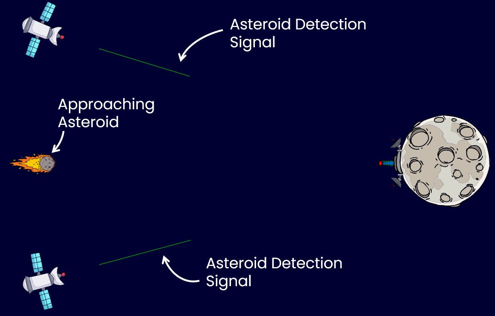
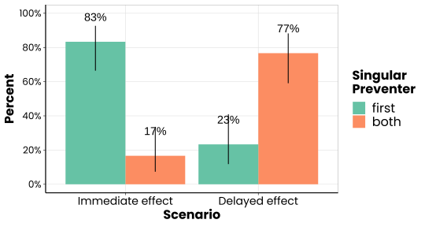

The goal of the study was to test the hypothesis that whether or not reasoners assume a preemptive relation between potential causes of an effect depends whether the onset of the effect is contiguous to the “arrival” of the causal process of the first cause, or whether it is delayed and allows the influence of the second cause to “arrive”. To see what we mean by “an effect is contiguous or not to the arrival of a causal influence”, consider the following scenario: Imagine that a data file that is stored on a server is deleted when a “deletion” order is sent from one of two computers, A and B. In the first scenario, assume that the file is deleted instantaneously, i.e., as soon as the server receives the deletion order from a computer. In the second scenario, the server does not delete the file until midnight of the same day on which a deletion order is sent. Imagine that on a particular day, Computer A sends a deletion order first at noon, and that Computer B sends a deletion order one hour later. Our hypothesis is that people will assume a preemptive causal relation between two competing causes of an effect only if the effect (the deletion of the file from the server in the example) is contiguous to the “arrival” of the causal influence of the first cause. In this case, we expect that people say that the first cause was the singular cause of the effect, and the second was not a cause. In the case in which the effect onset is delayed, we expect that people say that both causes are singular causes of the effect.
Sixty subjects (\(M_{age}\,= 39.62\) years, Age range~\(= 21 - 69\) years, 35 female, 25 male) recruited via Prolific () participated in this online study and provided valid data. The inclusion criteria were the same as in the previous experiments. Prolific workers who took part in previous studies of this project were not excluded from participation. As this is the first study testing the hypothesis with this scenario, we had no precise information about possible effect size. We decided to stop collecting data when 30 subjects in each of the two theoretically relevant conditions (N = 60) completed the experiment and provided valid data. Subjects received a monetary compensation for their participation.
A link to a demo version of the experiment is provided below. The theoretically relevant factor was whether the onset of the preventive mechanism variable (the laser cannon in the scenario) was contiguous (immediate condition) to the “arrival” of a preventive influence or whether its onset was delayed (delayed condition) so that even the influence of the second preventer arrived before it became active. This factor was manipulated between subjects. In the final test case, one of the preventers (the two satellites in the scenario) became active before the other. This timing of the preventer onsets was manipulated within-subject (the order was counterbalanced between subjects).
Subject read a scenario description about a moon that scientists had discovered. There were valuable minerals on that moon, which is why the scientists installed a protection system that prevents the moon from being destroyed by asteroids. Subjects learned that two detection satellites have the task to spot approaching asteroids. Whenever they spot an asteroid, they send a detection signal to a laser cannon positioned on the moon’s surface. The laser cannon then shoots a laser beam towards the asteroid and destroys it. Subjects saw two animations in which each of the satellites was shown in action. These animations ensured that subjects understood that either of the two satellites is sufficient to activate the laser cannon. Subjects had to answer a check question after each animation, which ensured that they understood what happened in the animations.
In the test phase, subjects saw an animation in which an asteroid was approaching and the two satellites sent a detection signal to the cannon. One satellite sent the signal earlier than the other. Depending on the condition, the laser cannon either directly shot upon the arrival of the signal from the first satellite or there was a delay and the cannon only fired after the signal from the second satellite had arrived. The asteroid was destroyed, preventing a destruction of the moon. On the same screen below the animation, subjects were asked the singular prevention test query, which read: “According to your intuition, which option best describes what happened on the occasion shown in the animation.” The three option subjects could choose from were:
Subjects then were asked to answer an additional control question asking them to indicate which of the two satellites noticed the asteroid first. They also provided brief explanations of their judgments. Subjects then provided demographic information, could report technical errors, and finished the study on a short debriefing screen.
Subjects’ singular prevention judgments are shown in the figure below. As predicted, we found that most subjects said that the first preventer was the singular preventer of the effect in the condition in which the preventive mechanism variable became active as soon as the signal from the first preventer had arrived. Also as predicted, subjects said that both preventers were singular preventers of the effect in which the mechanism variable became active with a delay.

The data set contains the following columns:
Copyright © 2022 Simon Stephan. All rights reserved.